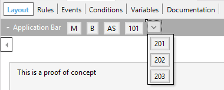

Allows selecting the control type of an Action Group. Each type has a different behavior, as described below. Values
Run-time/Design-timeThis property applies only at design-time.
ExamplesCase 1 - BehaviorSuppose the application bar with the following options:  where 'M', 'B', 'AS', '101' are buttons and the last one an ActionGroup within the ApplicationBar with 3 options ('201','202','203').
Sample Code
Event 'Menu'
ActionGroup2.Show()
Endevent
Event 'Bar'
ActionGroup3.Show()
Endevent
Event 'AS'
ActionGroup4.Show()
Endevent
and the following design:
The application bar with the initial options are detailed as follows:
Once you select the options:
Remember that iOS (iPhone and iPad split) displays the Menu as ActionSheet; Bar is not implemented, so the result is:
Case 2 - With default optionsDefine an ActionGroup with the following options
The following sample details an ActionGroup with the Edit, Share and Delete options for Android (its three alternatives) and iOS (action sheet only).
ScopeAction Group Control for Smart Devices
AvailabilityThe Bar Type for secondary action groups is available only for Android.
|
| Backlinks |
| Action Group Control for Smart Devices |